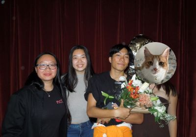

Founder, Author
Vincent is the founder and lead editor of The Crux Corner, where he combines his passion for rock climbing with a growing skill set in web development. He is currently a student at Rutgers University, studying computer science, where he continues to build a strong technical foundation to support his work, and has been climbing for over three years!
Through The Crux Corner, Vincent aims to create a space for climbers of all levels to explore, learn, and connect. His goal is to inspire everyone to hone their skills, whether means building their first website or completing their first climb!
Lead Editor
Annie is a recent climber who brings sharp editorial skills to The Crux Corner, helping refine content and keeping things clear. As a Biochemistry and Molecular Biology major at Rutgers University, she applies the same attention to detail in her academic work as she does here!
Chief Photographer
Sabrina is a Computer Science major at Rutgers University with a strong inclination to photography, film, and especially rock climbing! She loves capturing moments both on and off the wall, blending her creative eye with her passion for designing and coding!
Intern, Emotional Support
Microwave is The Crux Corner's number one intern, who is responsible for overseeing daily operations including nap times and lunch breaks. She plays a critical in maintaining morale and keeping the office a stress-free environment. She has been on an indefinite leave since last November due to scheduling conflicts. The Crux Corner hopes you come back to us soon!

The Crux Corner is dedicated to making rock climbing more accessible, engaging, and community-driven for climbers of all levels. Through shared experiences, honest insights, and creative storytelling, we aim to inspire others to challenge themselves, track their progress, and find connection both on and off the wall.
We meet for the first time in freshman year of college through a mutual friend, quickly bonding over shared classes, late-night study sessions, and a growing interest in trying new activities together. What started as casual friendships soon became a close-knit group that would later find a shared passion in climbing.
We go on our first ever climbing trip together to Gravity Vault Princeton. It is our first time climbing at this location, and Annie's first time climbing ever!
After this trip, we decided to make climbing a regular part of their routine, committing to going every Wednesday until graduation! What started as a one-time outing, quickly turned into a consistent tradition and a way to stay connected throughout the semester,
We decided to take our climbing skills to NJ Rock Climbing Gym in Fairfield, New Jersey. We met up with more friends who were also new climbers, turning our session into a fun, new adventure every time.
There, the idea to create The Crux Corner was developed, born from conversations between climbs about creating a space to document our progress, experiences, and build something that reflected our new passion for climbing!
We launched out first iteration of The Crux Corner to our close family and friends to gather feedback and support. While simple in design, this version was a major stepping stone for our team, as it represented us turning our idea into something real!
The support of our loved ones guided us into figuring out what to improved and pushed us to developing the site into what it has become today!
The Crux Corner officially launched at the beginning of April 2026, marking yet another major milestone for our team. From the start, the site received immediate success, especially from new and beginner climbers.
We are excited to continue building on this momentum, improving the platform, and growing The Crux Corner into a go-to-space for all climbers to learn, share, and connect!